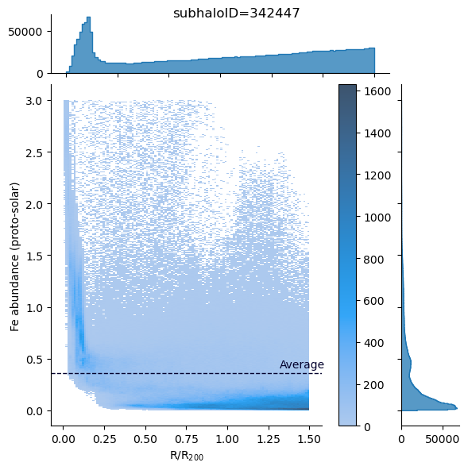
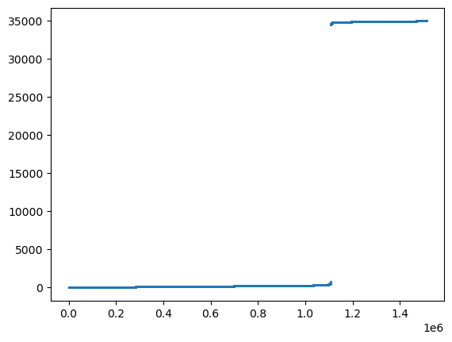
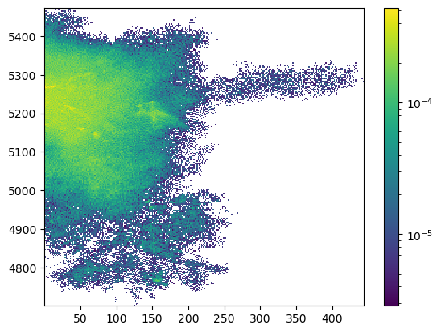
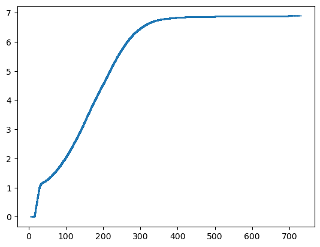
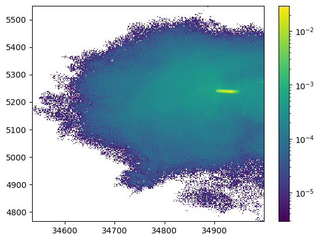
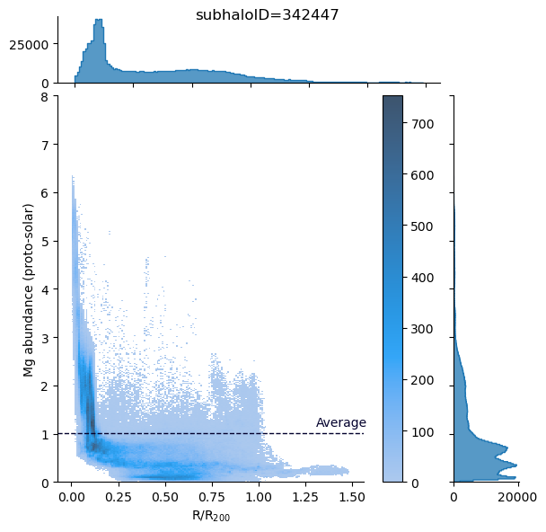

The following modules installed.
- import illustris_python as il
- import numpy as np
- import pandas as pd
- import os
- import matplotlib.pyplot as plt
- from matplotlib.colors import LogNorm
- import glob
['H',
'He',
'C',
'N',
'O',
'Ne',
'Mg',
'Si',
'Fe',
'Total',
'm',
'x',
'y',
'z',
'vx',
'vy',
'vz']
with open("eROSITAbubble_subhaloID.txt", mode="r") as f:
subhalolist = [int(i) for i in f.readlines()]
abd = pd.read_csv("./solar_xspec_qiita.csv")
fe_abd = ((data["Fe"] / abd["atomicMass"][25]) / (data["H"] / abd["atomicMass"][0])) / (
abd["aspl"][25] / abd["aspl"][0]
)
_X = r/h/viri
_Y = fe_abd
Y = _Y[(_Y<=3.0) & (_X<=1.5)]
X = _X[(_Y<=3.0) & (_X<=1.5)]
average = np.mean(Y)
df = pd.DataFrame({"Fe abundance (proto-solar)": Y, "R/R$_{200}$": X})
g = sns.JointGrid(
data=df,
y="Fe abundance (proto-solar)",
x="R/R$_{200}$",
marginal_ticks=True,
)
g.plot_joint(sns.histplot, discrete=(False, False), cbar=True)
g.ax_joint.axhline(y=average, color="#03012d", linestyle="--", lw=1)
g.ax_joint.text(np.max(X) * 0.88, average * 1.15, "Average", color="#03012d")
g.plot_marginals(sns.histplot, element="step")
g.fig.suptitle(f"subhaloID={subhalolist[0]}")
Text(0.5, 0.98, 'subhaloID=342447')

basePath = "/home/nishihama/data/TNG50-1/output/"
snapnum = 99
cm = il.groupcat.loadSingle(basePath, snapnum, subhaloID=subhalolist[1])["SubhaloCM"]
cmx, cmy, cmz = cm
[<matplotlib.lines.Line2D at 0x7fc3673ddba0>]


[<matplotlib.lines.Line2D at 0x7fc367adfee0>]

data = np.load("./AllCutData/subhalo372754_data.npz")
dd = np.load("./cut_data/subhalo372754_data.npz")
test = plot_tools(data)
test.data["SubfindDMDensity"] = dd["SubfindDMDensity"]
test.data["SubfindDensity"] = dd["SubfindDensity"]
The physical quantities incorporated are as follows.
CMx
CMy
CMz
x
y
z
Density
ElectronAbundance
EnergyDissipation
GFM_AGNRadiation
GFM_CoolingRate
GFM_Metallicity
H
He
C
N
O
Ne
Mg
Si
Fe
MetalTotal
SNIa
SNII
AGB
NSNS
FeSNIa
FeSNII
GFM_WindDMVelDisp
GFM_WindHostHaloMass
InternalEnergy
InternalEnergyOld
Machnumber
magx
magy
magz
MagneticFieldDivergence
Masses
NeutralHydrogenAbundance
Potential
StarFormationRate
vx
vy
vz
SubfindDMDensity
SubfindDensity
Cut data by radius.
348.88342
309.19794308302477

subhaloID=342447のabundance
j=0
sei = "Mg"
basePath = "/home/nishihama/data/TNG50-1/output/"
snapnum = 99
h = 0.6774
with open("eROSITAbubble_subhaloID.txt", mode="r") as f:
subhalolist = [int(i) for i in f.readlines()]
cm = il.groupcat.loadSingle(basePath, snapnum, subhaloID=subhalolist[j])["SubhaloCM"]
cmx, cmy, cmz = cm
sbm = il.groupcat.loadSingle(basePath, snapnum, subhaloID=subhalolist[j])["SubhaloMass"]
data = np.load(f"./AllCutData/subhalo{subhalolist[j]}_data.npz")
dd = np.load(f"./cut_data/subhalo{subhalolist[j]}_data.npz")
test = plot_tools(data)
test.data["SubfindDMDensity"] = dd["SubfindDMDensity"]
test.data["SubfindDensity"] = dd["SubfindDensity"]
data = test.data
abd = pd.read_csv("./solar_xspec_qiita.csv")
fe_num = {"H":0, "He":1,"Li":2,"Be":3,"B":4,"C":5,"N":6,"O":7,"F":8,"Ne":9,"Na":10,"Mg":11,"Al":12,"Si":13,"P":14,"S":15,"Cl":16,"Ar":17,"K":18,"Ca":19,"Sc":20,"Ti":21,"V":22,"Cr":23,"Mn":24,"Fe":25,"Co":26,"Ni":27,"Cu":28,"Zn":29}
fe_abd = ((data[f"{sei}"] / abd["atomicMass"][fe_num[f"{sei}"]]) / (data["H"] / abd["atomicMass"][0])) / (
abd["aspl"][fe_num[f"{sei}"]] / abd["aspl"][0]
)
viri = test.calc_virial_radius(cm,sbm)
r = np.sqrt((data['x']-cmx)**2 + (data['y']-cmy)**2 + (data['z']-cmz)**2)
X = r/h/viri
Y = fe_abd
average = np.mean(Y)
df = pd.DataFrame({f"{sei} abundance (proto-solar)": Y, "R/R$_{200}$": X})
g = sns.JointGrid(
data=df,
y=f"{sei} abundance (proto-solar)",
x="R/R$_{200}$",
marginal_ticks=True,
)
g.plot_joint(sns.histplot, discrete=(False, False), cbar=True)
g.ax_joint.axhline(y=average, color="#03012d", linestyle="--", lw=1)
g.ax_joint.text(np.max(X) * 0.88, average * 1.15, "Average", color="#03012d")
g.plot_marginals(sns.histplot, element="step")
g.fig.suptitle(f"subhaloID={subhalolist[j]}")
# g.ax_joint.set_xlim(0, 1.5)
g.ax_joint.set_ylim(0, 8.0)
(0.0, 8.0)
